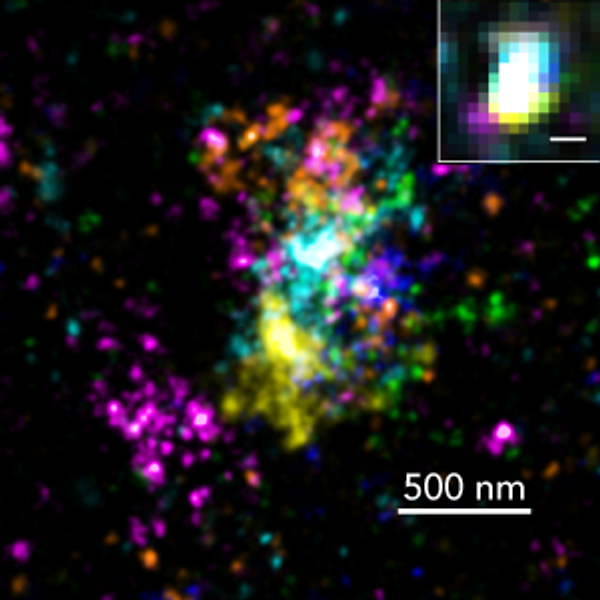
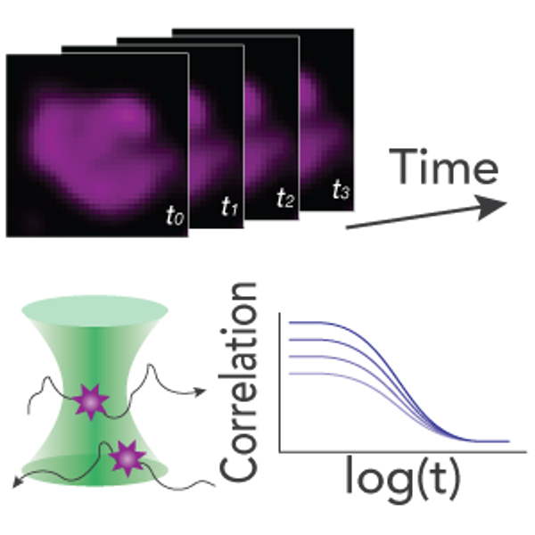
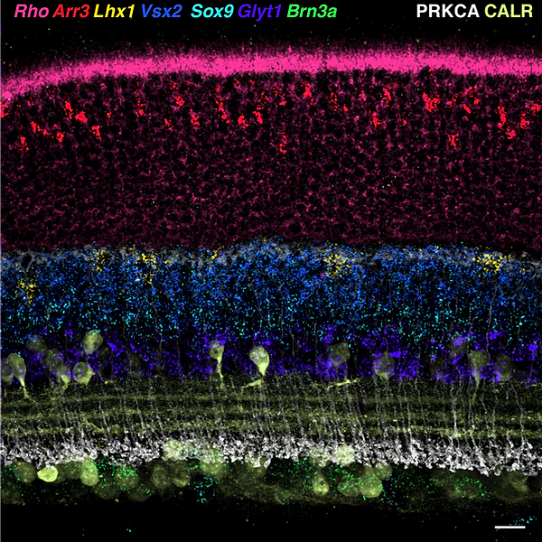
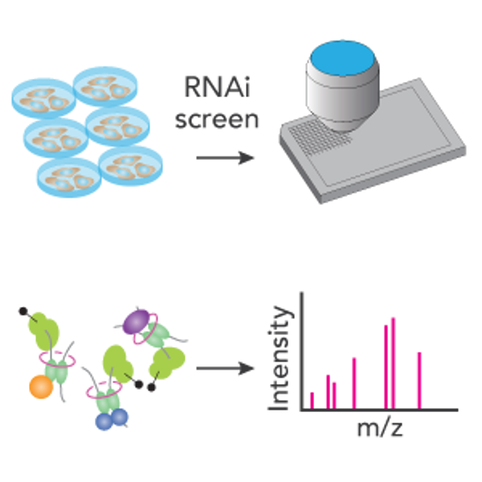
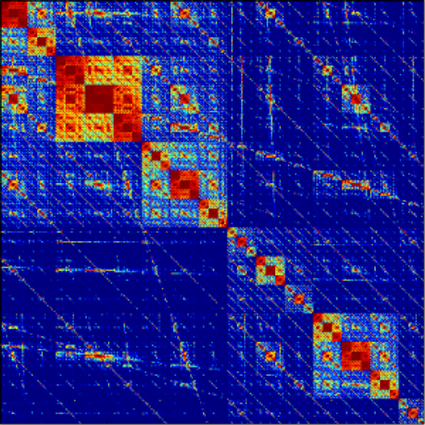
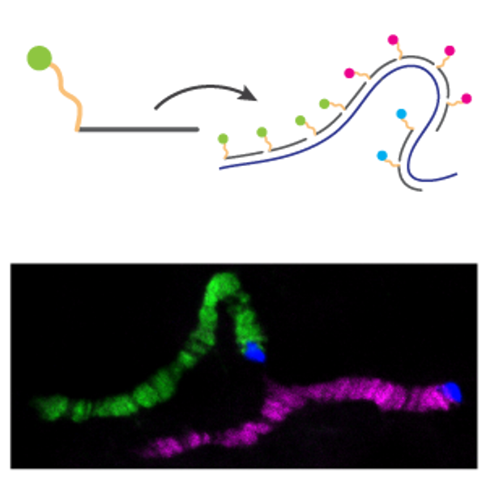
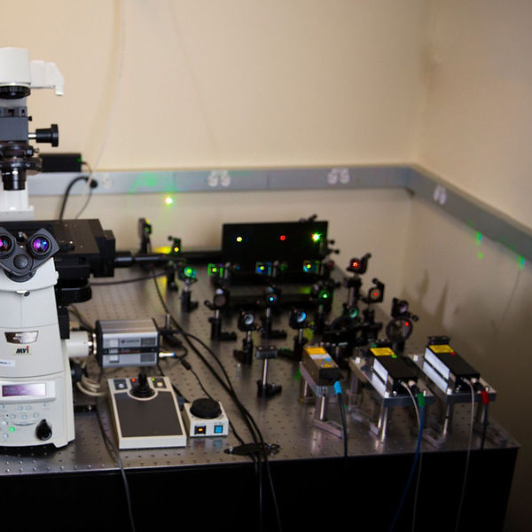

Imaging chromosome structure at the nanoscale
We use multiplexed DNA-PAINT and STORM single-molecule super-resolution microscopy in combination with programmable Oligopaint FISH probes to visualize the nanoscale structure of chromosomes. This approach provides a ~10-fold improvement in resolution compared to conventional microscopy and allows us to map the conformation and folding of chromosomes with exquisite detail.

Visualizing chromatin dynamics
We are interested in dynamic and structural properties of chromosomes in live cells. We use advanced live-cell imaging approaches such as single-particle tracking, fluorescence correlation spectroscopy, and super-resolution imaging to investigate the behavior of chromosomes in vivo.

Spatial transcriptomics
Technologies such as single-cell RNA sequencing are producing a wealth of information about cell populations in different tissues during and after development. Determining the spatial arrangement of these cells remains much more challenging. We deploy our SABER multiplexed imaging technology in combination with advanced microscopy to map patterns of gene expression in their native contexts.

High-throughput screening
We are interested in deploying high-throughput approaches such as Hi-FISH and targeted mass spectrometry to identify the molecular factors that shape and structure the 3D genome.

Genome mining and thermodynamic modeling
We build and use computational tools to find optimal sites for molecular reagents such as in situ hybridization probes on a genome-wide scale. We also use machine learning and analytical computing to predict the thermodynamic behavior of nucleic acid systems and to investigate the sequence and structural properties of the genome.

Genomics technology development
We develop new enabling molecular technologies to allow researchers to investigate a broad range of questions involving genome organization and gene expression.

Advanced microscopy and instrumentation
Multiplexed super-resolution imaging of chromosomes in their in situ context presents significant technical challenges. We design and build custom optical configurations and apply advanced optical methods to increase our ability to visualize genome organization in single cells.